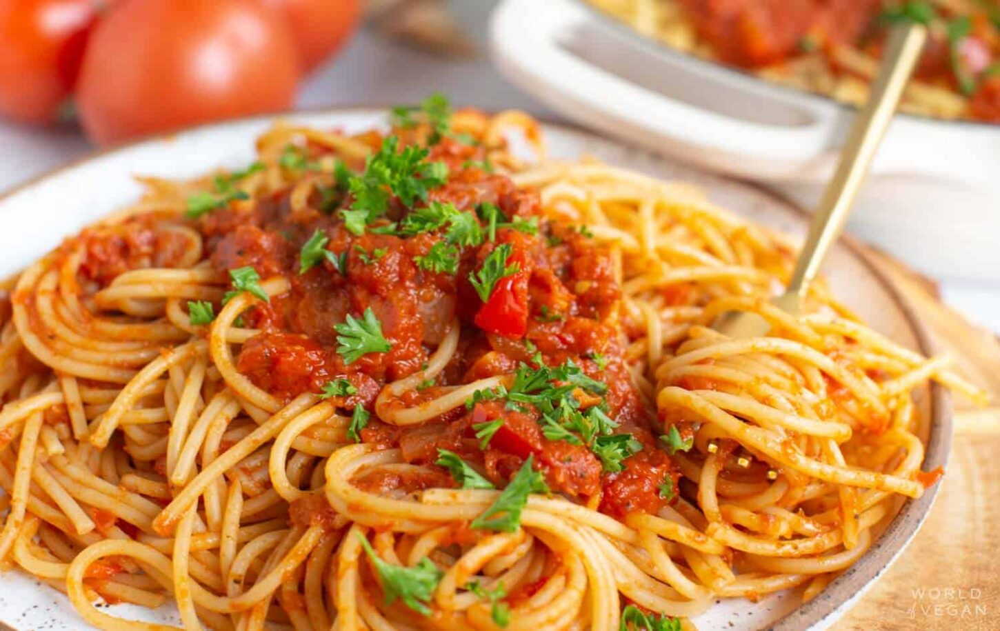
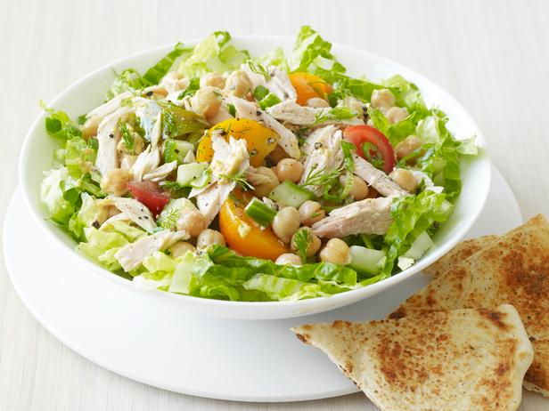

Spaghetti with Tomato Sauce

Ingredients:
- 400 g spaghetti
- 800 g canned tomatoes
- 1 onion, chopped
- 2 cloves garlic, minced
- 2 tablespoons olive oil
- Salt and pepper, to taste
Instructions:
- Cook the spaghetti according to package instructions, until al dente
- While the spaghetti is cooking, heat the olive oil in a pan over medium heat
- Add the chopped onion and garlic to the pan and sauté until translucent.
- Add the canned tomatoes and stir until heated through.
- Season with salt and pepper to taste.
- Serve the spaghetti with the tomato sauce on top.
Tuna Salad

Ingredients:
- 2 g cans of tuna (160g each)
- 1/2 cucumber, diced
- 1/2 red onion, chopped
- 2 tablespoons mayonnaise
- 1 tablespoons lemon juice
- Salt and pepper, to taste
Instructions:
- Drain the cans of tuna and place in a mixing bowl.
- Add the diced cucumber and chopped red onion to the mixing bowl
- Add the mayonnaise and lemon juice to the mixing bowl and mix everything
together
- Add the canned tomatoes and stir until heated through.
- Season with salt and pepper to taste.
- Serve the tuna salad on a bed of lettuce or on top of toasted bread
Chocolate Chip Cookies

Ingredients:
- 225g butter, softened
- 200g brown sugar
- 100g white sugar
- 2 eggs
- 1 teaspoons vanilla extract
- 350g all-purpose flour
- 1 teaspoonbaking soda
- 1/2 teaspoon salt
- 200g Chocolate chips
Instructions:
- Preheat the oven to 190°C (375°F).
- In a mixing bowl, cream together the softened butter, brown sugar, and white
sugar.
- Add the eggs and vanilla extract to the mixing bowl and mix everything
together.
- In a separate bowl, mix together the flour, baking soda, and salt.
- Gradually add the dry ingredients to the mixing bowl with the wet ingredients,
mixing until everything is combined.
- Fold in the chocolate chips.
- Use a cookie scoop or spoon to portion out the cookie dough onto a baking
sheet lined with parchment paper.
- Bake for 10-12 minutes, until the cookies are golden brown.
- Let the cookies cool for a few minutes before transferring to a wire rack to cool
completely.